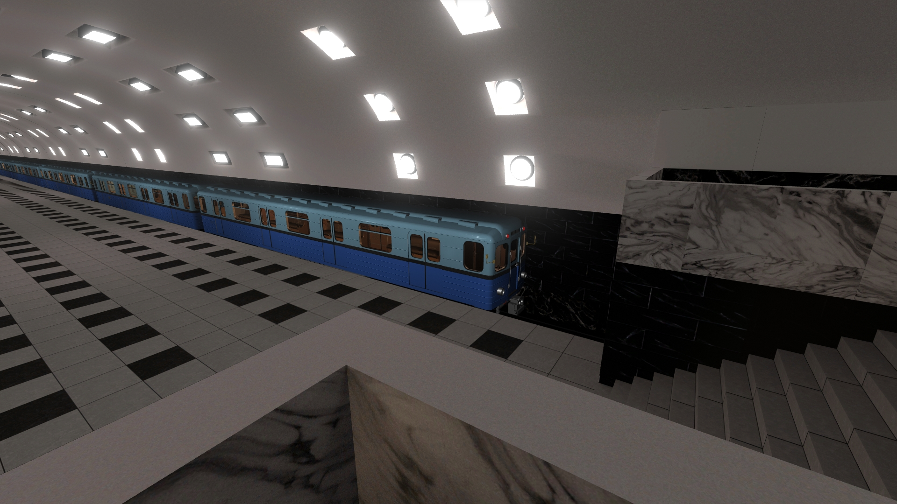
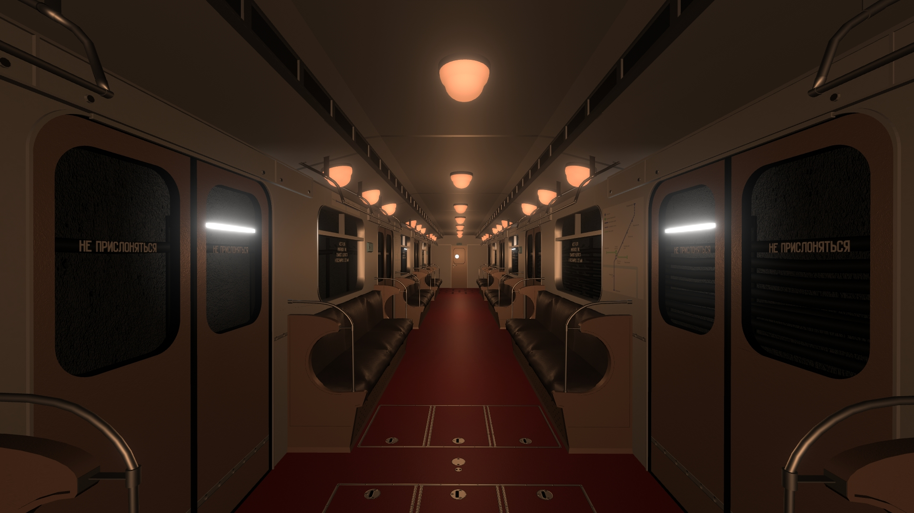
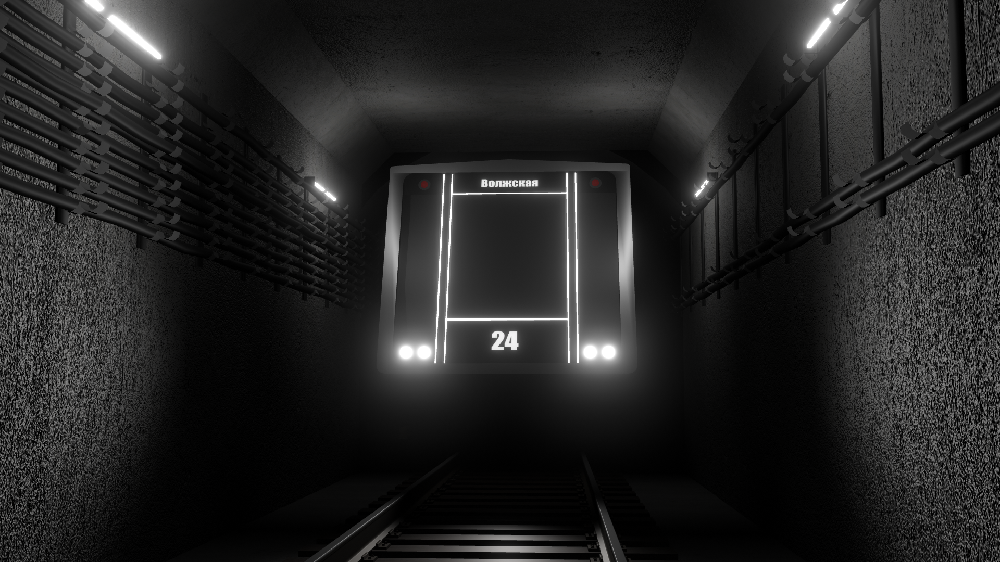
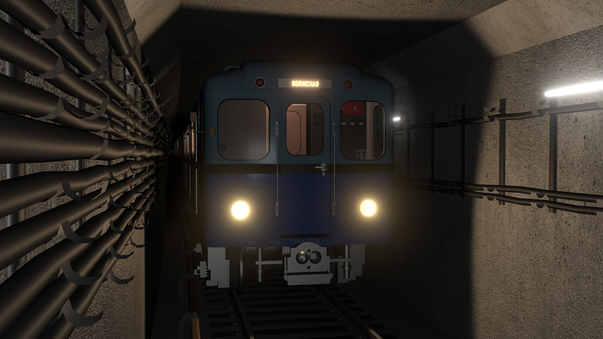
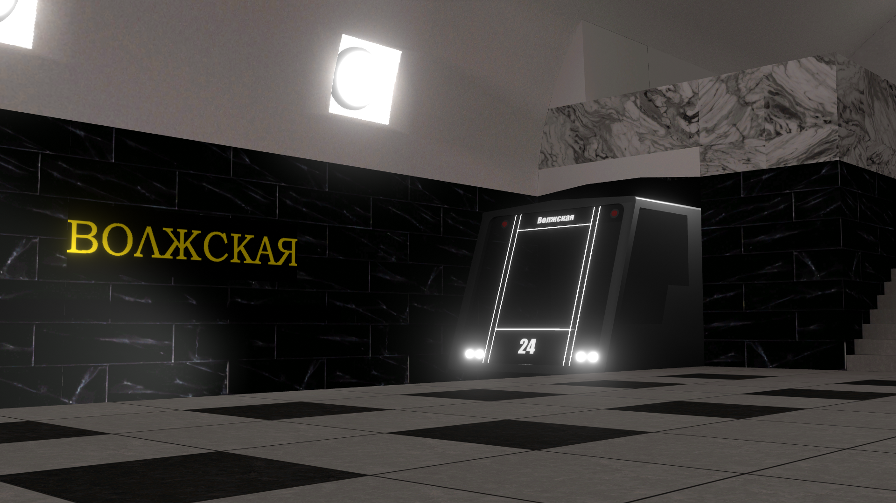
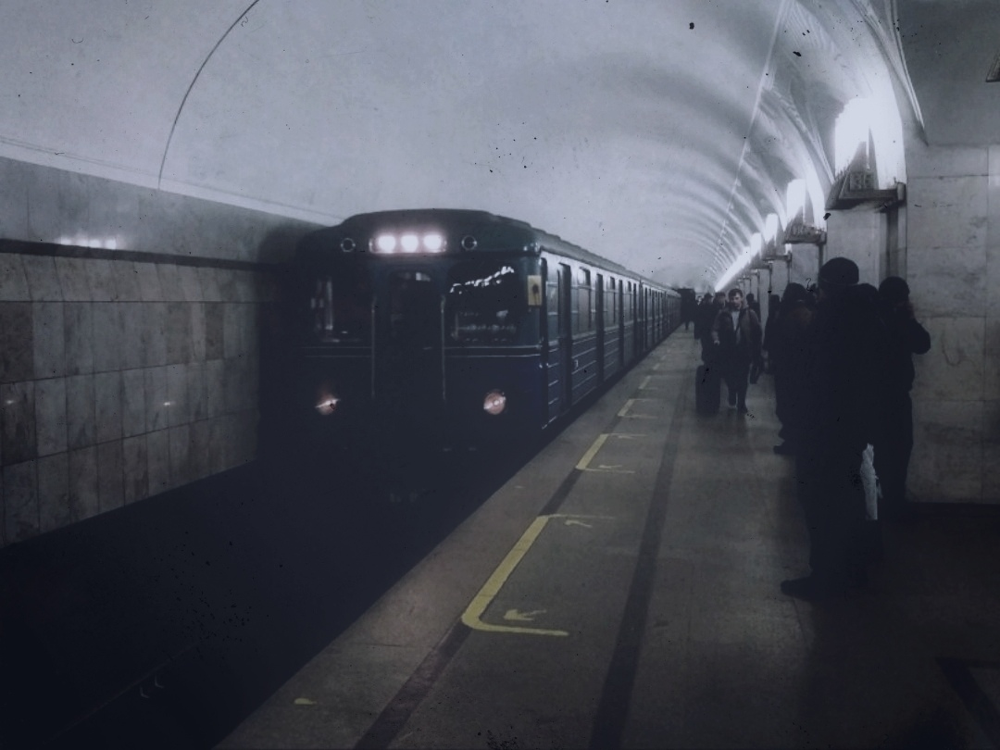
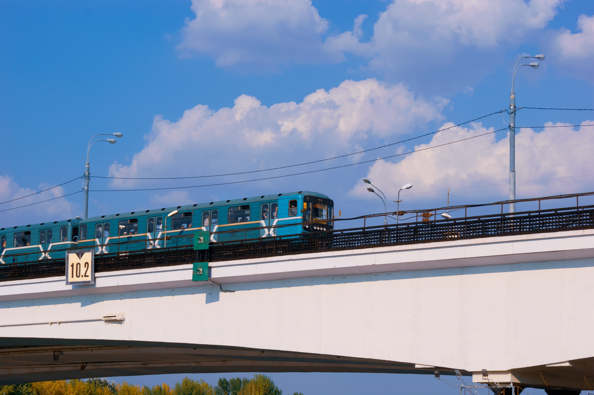
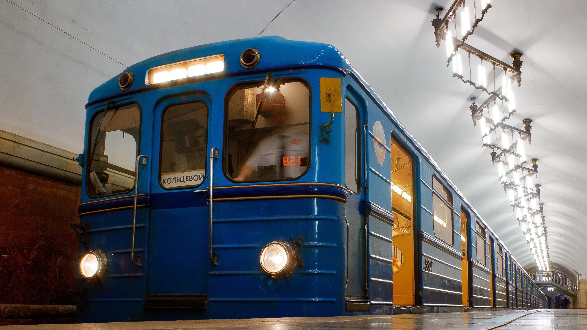

Погрузитесь в атмосферу настоящего русского метро! Научитесь управлять как старыми поездами с их особенностями, так и с новыми (и даже концептуальными)! Следите за показаниями сигналов светофоров, скоростью, торможением на станциях и в экстренных ситуациях. Игра основана на реальных принципах работы метрополитена с исторической достоверностью, вниманием к деталям и техническими нюансами.
Купить в Steam


В Metro Town вы сможете управлять разными поколениями подвижного состава — от легендарных советских моделей до современных и экспериментальных составов. Каждый поезд имеет уникальную динамику, систему управления и звуковое сопровождение.
Еж/Еж1

Составы из вагонов Еж и Еж1 производились на Мытищинском машиностроительном заводе и имели ласковое прозвище Ёжики.
Серебряная нить

Новейший советский поезд 80-х, так и не прошедший дальше макета из-за проблем в СССР на то время. В игре можно увидеть и поуправлять тем, каким он мог быть.
Еж3/Ем508Т

Улучшенная версия составов Еж/Ем, имеет как технические новшества, так и изменения в салоне по сравнению с Еж/Ем (например, жёсткие диваны).
81-717/714

Первый серийный поезд, в котором кабина управления у промежуточных вагонов спрятана под пассажирскими креслами, за счёт чего увеличена вместимость. Имеет также немало технических новшеств.
Еж3РУ1/Ем508ТРУ1

Составы из вагонов Еж3 и Ем508Т после проведения КВР. В Москве они ходили в регулярной пассажирской эксплуатации вплоть до 2020 года.
По вопросам и предложениям пишите на: vykhinogamesl@gmail.com